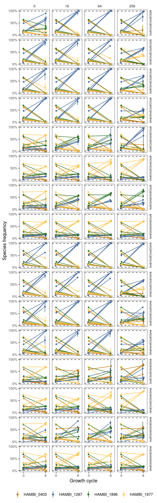

Analysis of quartet competition
Abstract
Here we analyze the community outpcomes from all competing species quartets.
1 Setup
1.1 Libraries
1.2 Global variables
2 Read data
2.1 Species abundances
3 Format
Create a metadata tibble that contains faceting information
Show/hide code
md <- samp_quarts %>%
dplyr::select(sample, strainID, evo_hist, target_f_masterplate) %>%
# make a combined evolution and species identifier and extract the community ID
dplyr::mutate(strainID = paste0("H", str_extract(strainID, "\\d+"))) %>%
dplyr::group_by(sample) %>%
dplyr::mutate(n = 1:n()) %>%
ungroup() %>%
tidyr::pivot_wider(id_cols = c(sample), values_from = c(strainID, evo_hist, target_f_masterplate), names_from = n) %>%
mutate(sps = paste(strainID_1, strainID_2, strainID_3, strainID_4, sep = "-"),
f0 = paste(target_f_masterplate_1, target_f_masterplate_2, target_f_masterplate_3, target_f_masterplate_4, sep = "-"),
hist = paste(evo_hist_1, evo_hist_2, evo_hist_3, evo_hist_4, sep = "|")) %>%
dplyr::select(sample, sps, f0, hist)Combine into a final tibble
Show/hide code
t0 <- samp_quarts %>%
dplyr::filter(community_type == "masterplate") %>%
dplyr::select(-strep_conc, -replicate) %>%
full_join(tibble(transfers = c(0, 0, 0, 0), strep_conc = c(0, 16, 64, 256)),
by = join_by(transfers),
relationship = "many-to-many")
t8 <- samp_quarts %>%
dplyr::filter(community_type == "experiment")
tf <- bind_rows(t0, t8) %>%
left_join(md, by = join_by(sample)) %>%
dplyr::summarize(ggplot2::mean_cl_boot(f),
.by = c("sps", "f0", "hist", "strep_conc", "transfers", "strainID")) %>%
mutate(ymin = if_else(is.na(ymin), y, ymin),
ymax = if_else(is.na(ymax), y, ymax)) %>%
mutate(extinct = if_else(y <= 0.01 | y >= 0.99, "extinct", "coexist"))4 Plot
Show/hide code
spcols <- c("HAMBI_0403" = "#bd7811", "HAMBI_1287" = "#476c9e", "HAMBI_1896" = "#31752a", "HAMBI_1977" = "#ffc755")
pj <- ggplot2::position_jitterdodge(jitter.width=0.0,
jitter.height = 0.0,
dodge.width = 0.5,
seed=9)
p4sps <- ggplot(tf, aes(x = transfers, y = y, group = interaction(strainID, f0, strep_conc, hist))) +
geom_hline(yintercept=0.01, color = "grey20", lty = 2) +
geom_hline(yintercept=0.99, color = "grey20", lty = 2) +
ggplot2::geom_linerange(aes(ymin = ymin, ymax = ymax, color = strainID), position = pj) +
ggh4x::geom_pointpath(aes(color = strainID, shape = extinct), position = pj, mult = 0.2) +
facet_grid(hist ~ strep_conc) +
ggplot2::labs(x = "Growth cycle", y = "Species frequency", color = "Species") +
ggplot2::scale_y_continuous(limits = c(0, 1), breaks = c(0, 0.5, 1), labels = percent) + #trans = "sqrt",
ggplot2::scale_x_continuous(limits = c(-1, 9), breaks = c(0, 8)) +
scale_shape_manual(values = c(16, 4), guide = "none") +
scale_color_manual(values = spcols) +
ggplot2::theme_bw() +
ggplot2::theme(strip.background = element_blank(),
legend.position = "bottom",
panel.grid = element_blank(),
legend.title = element_blank(),
axis.text = element_text(size = 8),
strip.text = element_text(size = 8))